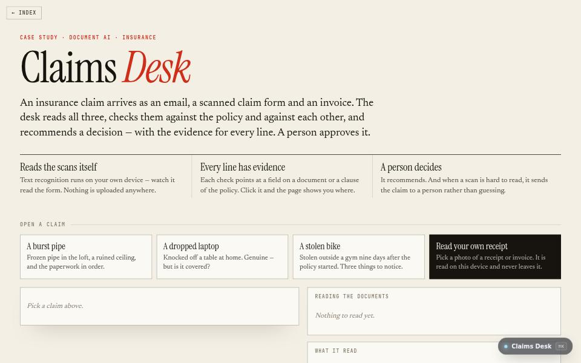

AI product · about 3 min · The Product Archipelago
Claims Desk
Reads an insurance claim — email, scanned form, invoice — checks it against the policy and itself, and recommends a decision with the evidence for every line.

The problem
Claims handlers spend their day retyping paperwork and checking it by hand.
What it does
- Reads scanned forms and invoices with OCR, in the browser
- Runs up to thirteen checks, each linked to the field or clause it rests on
- Recommends approve, decline or refer, and records who approved or overrode it
The most interesting decision
A misread can only ever send a claim to a person
Across 180 deliberately smudged scans the tests enforce a rule stricter than any accuracy figure: a misread may refer a claim, but must never pay one that should not be paid or decline one that should not be declined.
Built with
- Tesseract OCR in WebAssembly
- OCR-tolerant field reader
- Thirteen policy checks
- Web Worker
- Human override
Evidence
11 of 11 fields read from each scan; on 180 smudged scans a misread only ever sends a claim to a person. Read its tests
Its world
A sorting tower where a beam reads each scanned form and drops it down one of three chutes.